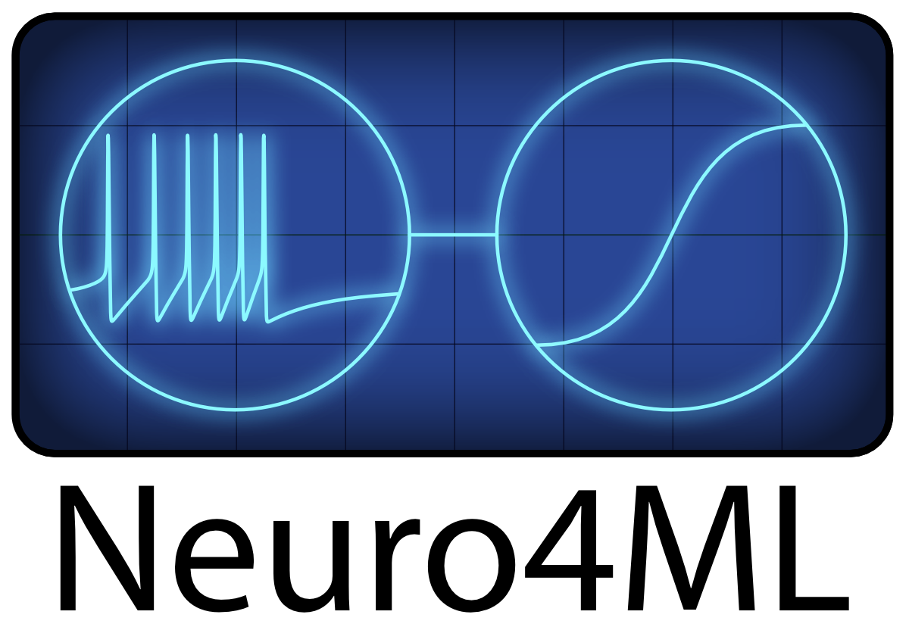

2025-09
2025-09-26
carboncybernetics (epilepsy seizure)


2025-09-25
白內障手術 五大要知道

- 我希望我選擇了更好的水晶體植入物
- 我後悔等了這麼久才做這件事
- 應該去找一位更有經驗的外科醫生
- 沒有人告訴我手術後會出現乾眼和眩光
- 我沒有意識到雙眼都要做才能達到最佳效果
EU EBRAIN

DNA Break Repair

DNA Break Repair by Homologous Recombination (2024) Drew Berry wehi.tv
Awesome Time Series
A collection of resources for working with sequential and time series data
Neuro Inspired Computational Elements Conference

Ecovative: We grow better materials (Use Fungus)

2025-09-24
neuromatch

Neuro4ML

2025-09-23
neuroblox


Phase Plane Ploter

Celery - Distributed Task Queue
Celery is a simple, flexible, and reliable distributed system to process vast amounts of messages, while providing operations with the tools required to maintain such a system.
2025-09-22
Invariance and equivariance in brains and machines

Invariance and equivariance in brains and machines
briansimulator spiking neural network simulator
Brian has been successfully used in hundreds of modelling studies, many of which have made their code freely available to download online. It’s used for the coding exercises in the popular computational neuroscience textbook Neuronal Dynamics (Gerstner et al.).

天災多 房險續約遭拒激增3倍 無房險＝無法貸款＝買不起房子
紐約時報報導，氣候變遷導致天災變得頻繁之際，保險公司卻紛紛拒絕房屋保險續約，消費者若沒有房屋保險就無法取得貸款，沒有房貸恐怕就買不起房子，失去房屋保險已經成為某些民眾的切身之痛。根據參院預算委員會(Senate Budget Committee)18日公布調查報告，全美有200多個郡縣，2018年以來保險公司拒絕讓房屋保險續約的比率增加至少3倍。
Handwritten Digit Recognition with FPGA-Powered CNNs
2025-09-19
Lab Notebook Guidelines
2025-09-18
A Neuro-vector-symbolic Architecture for Solving Raven’s Progressive Matrices
Solving Raven’s Progressive Matrices
Cool Neural Science Lab
Cool HD Application from Tajana Simunic Rosing , UC San Diego, USA
Tajana Simunic Rosing , UC San Diego, USA
Hyperdimensional Computing with Applications
2025-09-16
nanochap : stim and bio sensor chip
Neuroscience for machine learners Course
Neuroscience for machine learners
2025-09-15
Nonlinear Dynamics and Chaos - Steven Strogatz

meclab : pyrosim
2025-09-11
A family of designs for the Matchbox Co Pro for the BBC Micro.
Electronic Engineer, Andrew Levido
Electronic Engineer Andrew Levido
2025-09-10
Hyperdimensional-Computing
HDC-MNIST-FHRR-Classification
The excitation/inhibition (E/I) ratio
The excitation/inhibition (E/I) ratio of the brain is not a fixed number but a
range that varies across different brain regions, developmental stages, and
even within an individual's lifetime, though recent estimates suggest a ~80:20
ratio of excitatory:inhibitory neurons in the adult mouse brain as a whole. The
E/I ratio reflects the balance between glutamatergic (excitatory) and GABAerg
(inhibitory) neuron activity, which is crucial for healthy brain function and
cognition
2025-09-09
OpenCologne FPGA
Extension_Boards_for_Olimex_GateMate
2025-09-08
Approximating nonlinear functions with latent boundaries in low-rank excitatory-inhibitory spiking networks
latent boundaries in low-rank excitatory-inhibitory spiking networks
I feel it is important.
Pandoc (Universal Doc Converter)
openneuro open data
A free and open platform for validating and sharing BIDS-compliant MRI, PET, MEG, EEG, and iEEG data
NeuroMorpho.Org is the largest collection of publicly accessible 3D neuronal reconstructions and associated metadata
NeuroMorpho.Org is a centrally curated inventorys of digitally reconstructed neurons and glia associated with peer-reviewed publications. It contains contributions from over 1000 laboratories worldwide and is continuously updated as new morphological reconstructions are collected, published, and shared. To date, NeuroMorpho.Org is the largest collection of publicly accessible 3D neuronal reconstructions and associated metadata.
Designing An Open Source Micro-Manipulator
Designing An Open Source Micro-Manipulator
2025-09-05
Neural Reckoning Group
Neuroscience for machine learners
Portal of the Brain

The Allen Institute practices open science, releasing our data, analysis tools,
and other scientific resources publicly here at brain-map.org. We aim to
accelerate research and education efforts across the world by lowering barriers
to access and supporting collaboration.
Our focus on neuroscience began with the launch of the Allen Institute for
Brain Science in 2003, which led to the creation of the widely-used Allen Brain
Atlases. This division is in a 16-year phase focused on multimodal
characterization of brain cell types. In 2021, we launched the Allen Institute
for Neural Dynamics, a neuroscience division dedicated to understanding how
dynamic neuronal signals across the entire brain perform fundamental
computations and drive flexible behaviors.
OpenAI or Large Model AI Service create a very large Attack Surface
Because of the large quantity of energy usage.
Fourier Holographic Reduced Representation (FHRR) VSA
2025-09-04
EEGData Open data Sharing
The SWEC-ETHZ iEEG Database and Algorithms
The SWEC-ETHZ iEEG Database and Algorithms
2025-09-03
State Space Model and Kalman Filter
State Space Models and the Kalman Filter
BGA CrossTalk
1000 Brain Project

1000 Brain Project Core Playlist
Neuromorphic Algorithms Research
Neuromorphic Algorithms Research
mamba Linear-Time Sequence Modeling with Selective State Spaces

snnTorch
Legendre Memory Units
Legendre Memory Units: Continuous-Time Representation in Recurrent Neural Networks
Legendre Memory Units in NengoDL
2025-09-02
Legendre polynomials
Legendre polynomials provide an effective method for function approximation
over the interval [-1, 1], offering higher accuracy and faster convergence than
Taylor series for the same order, especially when global accuracy is important
By expressing a function as a linear combination of these orthogonal
polynomials, where coefficients are determined by integration, the resulting
Legendre expansion can approximate arbitrary, even discontinuous, functions
with a high degree of accuracy
Spiking Neural networks as Universal Function Approximators
Self-organization of neuronal networks
易思腦創辦人
2025-09-01
Drone with AI for Windmill Inspection

open-neuromorphic
mohsenimani COMPSCI 257. Brain-Inspired Learning Systems
Our research goal is to design a fully interpretable, hyperdimensional cognitive framework capable of real-time prediction and reasoning over complex data
creativeapplications